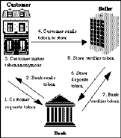
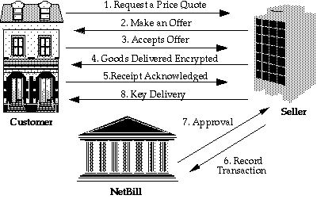

L. Jean Camp Marvin Sirbu J.D. TygarCarnegie Mellon University Pittsburgh, Pennsylvania 15213
What properties of money are important for electronic commerce? We argue that both transactional and privacy properties distinguish electronic commerce systems. We provide a quick overview of the history of money. We then consider privacy provided by different forms of money, and socially desirable disclosure of information as specified by legal reporting requirements. We classify electronic and traditional commerce systems into two categories:
* token systems, which exchange markers representing value
* notational systems, where value is stored as notations in a ledger or computer.
We analyze different forms of traditional money based on the degree to which they protect the privacy and preserve transactional ACID (atomicity, consistency, isolation, durability) properties. Finally we apply our evaluation criteria to two proposed electronic commerce systems: Digicash, (Chaum, 1985; Chaum, 1992) a token-based system; and NetBill, (Sirbu, 1995) a notational system.
As befits its central role in our market economy, money has been the subject of much consideration. As researchers build new electronic forms of money, it is important to keep fundamental monetary properties in mind. This paper examines these properties for both traditional and electronic commerce.
Money can be defined either in terms of the functions it performs, or in terms of its representative forms. Scholars generally agree that money serves three major functions. Perhaps most important is its role as a medium of exchange. By replacing barter with a two step process of selling one good for money, which is then used to purchase another good, exchange transactions are greatly simplified. As a standard of value, money units are used to measure the worth of different goods or services so that their value can be compared in terms of a single numeraire. Finally, money serves as a store of value. Wealth may be stored more easily in the form of money than as cattle or loaves of bread.
Consistent with its function as a store of value, many of the earliest forms of money consisted of valuable objects which people were willing to take in trade. Thus the gold in a gold coin may have a value as a commodity comparable to its monetary worth. Other valuable items which have been used as money include jewels, shells, arrowheads and other tools (Haddon, 1949).
Eventually, money in the form of an asset with intrinsic value yielded to the need for money convenient to transport, exchange, and store. Thus, the use of tokens having no intrinsic value became common. The first paper money in the United States was legally negotiable notes issued by banks which required payment on demand of an equivalent value of gold (Rubin, 1994). These notes had no intrinsic value, but were readily convertible to intrinsically valuable money.
Easily convertible notes imposed some of the same limits on economic growth as intrinsically valuable coins. Thus easily convertible notes yielded to the use of trusted paper. While today's dollar may still serve as a store of value, currency itself no longer consists of tokens with intrinsic value. Since 1971, United States currency has not been convertible to gold (Rubin, 1994). The use of mere pieces of paper as a medium of exchange, rather than tokens with intrinsic value, rests on a foundation of trust among the public that these pieces of paper will continue to be accepted in exchange and will serve as a stable store of value. A loss of trust could lead to a rapid return to barter, as is seen in countries where hyperinflation has rendered paper currency worthless overnight.
While notes are considerably more convenient than gold coins, they are still difficult to exchange in large amounts, and transport or store securely. Currently, most money consists not of pieces of paper currency, but rather of notations in the ledgers of depository institutions such as banks. We refer to this as notational money to distinguish it from token money or currency. Exchanges based on notational money require the debiting of one party's account and the crediting of another party's account. Institutions accepting demand deposits are required by law to be prepared to convert these notational deposits into currency on demand, thus providing convertibility between demand deposits and currency. Today, the amount of money which exists solely in the records of depository institutions vastly exceeds the value of currency in circulation (Heggestad, 1993).
A variety of instruments are used to instruct a bank to transfer notational money between accounts; the most common is a check. A complex system involving the Federal Reserve as a clearinghouse supports check clearing when accounts are held at different banks. In the last several decades, instructions to transfer notational money between accounts are increasingly sent electronically: wire transfers, ATM transactions, or more generally, Electronic Funds Transfer.
Notational and token currency are boundary conditions. For example, cashiers checks are notational money, but they share some of the properties of token money. There are also interfaces between the two: ATM machines and bank tellers exchange notational currency for token currency.
To realize its multiple functions, money must have several characteristics both in individual transactions and as a currency system enabling these transactions. In this section, we enumerate these key characteristics.[1] We use the computer science vocabulary to describe transactions.
Consider purchasing an item. This transaction should have four characteristics: atomicity, consistency, isolation and durability. These four properties are commonly used to describe computerized transaction systems and are referred to as the ACID properties (Gray, 1993).
* Atomicity: Either a transaction occurs completely or it does not occur at all. For example, consider what happens when I transfer funds from a savings account to a checking account. Either my checking account is credited and my savings account is debited or neither account balance changes. (Tygar, 1996)
* Consistency: All relevant parties must agree on critical facts of the exchange. For example, if I buy a good for three dollars, the merchant and I should both agree on the amount of the purchase. After the purchase is completed, we must agree on that fact as well.
* Isolation: Transactions should not interfere with each other, and the result of a set of overlapping transactions must be equivalent to some sequence of those transactions executed in non-concurrent serial order.
* Durability: Even if my computer or the merchant's computer crashes, we should be able to recover to the last consistent state. For example, money that was available to a computer before it crashed should not disappear when the machine reboots.
We can further subdivide atomicity into two cases: money-transfer atomicity and goods-transfer atomicity. In money-transfer atomicity, funds are transferred atomically. In goods-transfer atomicity, not only is money transferred atomically, but the goods are also linked atomically with the transfer of money. For example, if I pay a dollar for a text file but never receive that text file, then goods-transfer atomicity is violated.
Besides the ACID transaction properties, money has other desirable characteristics. The effort (and cost) associated with conducting a transaction with all the desirable properties should be low so as to make low value transactions economical. Also, as a medium of exchange, money must make possible both low value and very high value transactions. This is facilitated by divisibility: mechanisms which allow for the exchange of multiple low denomination instruments for a single high denomination instrument.
Monetary systems should also be scaleable in the number of users. Money systems must support many consumers simultaneously buying goods from many merchants.
The larger the community of users who trust and accept the particular form of money, the more that form of money's value as a medium of exchange is increased. Thus, a single national currency is preferable to a plethora of local currencies issued by regional banks. Similar considerations are driving the European Community to consider a single currency. Alternatively, there must be well accepted and relatively fixed mechanisms for converting among various forms of money. We refer to this property as interoperability.
Money should have temporal consistency as well as transactional consistency. For money to hold its store of value, it must not be possible for individuals to create or counterfeit money. An excess of money will lead to a loss of trust in money as a store of value and consequently as a medium of exchange. In this paper, we concern ourselves only with unauthorized creation of money (rather than restricting governments, banks, and other authorized institutions.) It should be easy to distinguish "authorized" money from illegitimate money (McClellan, 1995). Public trust that money is legitimate is an essential element in its successful use as a medium of exchange. (Heggestad, 1992; Rubin, 1994; Haddon, 1949)
Money must also have temporal durability as well as transactional durability. When we put money away for "a rainy day," we don't want it to fade away. Money should be easy to store and retrieve. Here we refer to temporal consistency and durability by saying that currency is conserved.
Having considered transactional properties of fund transfers, we now consider how information in different types of transactions is disclosed to various participants and observers. In any transaction, there are many pieces of information and at least two distinct parties. Among the pieces of information are the amount, date, time and location of the transaction; the identities of the parties; the nature of the goods being purchased; and even the demeanor of the parties. When any piece of information held by one party is hidden from some other party, that information is said to be private. When a party's identity is hidden, then the transaction is said to be anonymous. Transaction participants may want to control the level of privacy or anonymity. Different pieces of transaction information may be accorded different levels of privacy or anonymity: a piece of information may be easily observed, may have a limited range of values, may be observed only under certain conditions,[2] or be completely hidden.
When traditional (non-electronic) token currency is exchanged, there is typically limited anonymity. Merchants or observers can narrow the range of possible customers in a cash purchase: the customer's gender, race, age, and (potentially) social class; the time of the transaction; and the location of the transaction can be determined by simple observation. Disclosures to third parties are limited in practice by the relative difficulty of physical (as opposed to data) surveillance.
There are also a substantial set of legal reporting requirements. In the United States, for statutory reasons, any electronic commerce system should be able to:
* provide detailed transaction information under subpoena (12 USC Sec.1829, Bank Secrecy Act);
* prevent disclosure to law enforcement except under subpoena (12 USC Sec.3403, Financial Privacy Act);
* promptly report any transaction above $10,000 (12 USC Sec.1829, Money Laundering Act);
* store a copy of any transaction above $100 (12 USC Sec.1829, Money Laundering Act); and
* record any action on a joint account in the records of all parties (15 USC Sec.1591, Equal Credit Opportunity Act).
A notational currency system that can create and disseminate credit information as a primary business purpose must also:
* provide copies of consumer records to that consumer at his or her request (15 USC Sec.1681, Fair Credit Reporting Act);
* delete obsolete information (15 USC Sec.1681, 42 USC Sec.3608, 12 USC Sec.1708);
* provide relief to consumers in case of an error (15 USC Sec.1681, 42 USC Sec.3608, 12 USC Sec.1708);
* limit data dissemination based on the primary business purpose of the requester (15 USC Sec.1681).
Any notational system which is used to transfer wages must also provide a record, without the possibility of deletion, of personal income, or assure that the employer is able to do so (United States Tax Code, Section 61). Any currency system which is accessed by a card or similar device must protect the consumer against fraud by assuming all losses over $50 resulting from the loss of this device (when informed of such a loss by the consumer) (15 USC 1693, 12 USC Sec.3403 ).
These requirements are extended if an electronic notational currency system provides more than notational currency transactions. For example, a system which removes the need for consumer credit agencies needs to provide some equal or better form of fraud prevention than credit agencies' protective bulletins.
These reporting requirements are typical rather than exhaustive. For further discussion of the types of reporting requirements, please see the appendix.
Cash is token currency. Cash offers both privacy and anonymity because a dollar does not contain information that can be used to determine its transaction history. Neither does the exchange of cash necessarily create a record including the identities of those involved. Cash transactions usually provide anonymity of the buyer but not the seller. The privacy of cash is limited by the potential for physical observation. The information available to different parties in a cash transaction is shown in Table 1.
Info. Seller Buyer Date Amt Item Party Seller Full Partial Full Full Full Buyer Full Full Full Full Full Law Enf None None None None None Bank None None None None None Physical Observer Full Partial Full Full Full
Table 1: Information Available to the Parties In a Cash Transaction
Here we consider an observer who is physically well-placed: behind or beside the purchaser with a clear view of both parties and the transaction. A bank employee or officer of the law can obtain all the information available to an observer. However, there are no bank or law enforcement records produced in a cash transaction. It is reasonable to assume that no bank employee or law enforcement officer observes most cash transactions. Therefore the information available to a bank or to law enforcement is limited by what they would obtain from written records. Reporting of some transactions is required by law, but these reports depend on the active cooperation of the parties involved.
Paper currency trivially fulfills most of the requirements for an ACID transaction, including money-transfer atomicity. However, partially because cash is physical, cash suffers from scale limitations in transaction size and distance. Large transfers, such as those between banks, are problematic. Also, goods-transfer atomicity fails, especially when the transaction is over a distance.
There are no limits to scale in the number of users of cash, except those imposed by limits on the number of bills. Not only are individual transactions isolated, but the system is also free from bottlenecks.
Clearly there are security failures in the form of counterfeit notes, but security is generally maintained by a time-tested work factor. The design of the bills is periodically updated to discourage counterfeiting. Systems-level failures in the paper currency system are prevented by risk-limiting regulation, federal depository insurance, and the sheer magnitude of the task of passing enough counterfeit currency to upset the entire system.
Cash requires some trust between users. If a bill is determined to be counterfeit, the holder of the bill is not compensated. The validity of a bill can be partially verified during the transaction by visual inspection. By accepting cash, merchants imply only that they trust their own ability to detect counterfeits.
Cash is divisible in that there are many denominations; a large amount can be broken into many smaller amounts, and many smaller amounts can be exchanged for a single large denomination.
Cash is interoperable because it is legal tender. In fact, the lack of interoperability of state currencies was a driving force behind the creation of a national currency.
Checks simultaneously create a transaction and a record. This record includes customer identity, date, location, and amount of a purchase; and is available to all the parties in the transaction, including all banks and clearinghouses involved. In the United States, there is no legal constraint on the disclosure by banks of customer purchasing habits, except that information can not be improperly disclosed to the government[3]. Absent explicit customer notation, checks provide content privacy. Content privacy means only that the actual purchases made are never necessarily recorded by any third party; the existence, location and parties to a transaction might be known.
Banks' records of transactions must be available for law enforcement access for five years after the initial transaction. Banks, and therefore government, may obtain partial information on a purchase if it is so noted on the check. Banks offer credit information to direct marketers and potential employers. They also provide records to law enforcement under subpoena. However, the retrieval, aggregation, and distribution of data derived from checks is limited by the expense of image and handwriting recognition systems.
A check is not a token that represents value; it is a contract that authorizes the exchange of money from one account to another. Checks are instructions to transfer notational currency between demand deposit accounts.
Table 2 shows the information available to all parties in a checking transaction. Again,, we consider a well-placed observer who can actually read the check. The assumptions about law enforcement from the cash discussion remain true. (We put table entries that differ from the cash, as shown in Table 1, in boldface.)
Info. Seller Buyer Date Amt Item Party Seller Full Full Full Full Full Buyer Full Full Full Full Full Law Enf Full Full Full Full None [4] w/warrant Bank Full Full Full Full None Physical Observer Full Full Full Full Full
Table 2: Information Available to the Parties In a Check Transaction
Checks are money-transfer atomic; however, the status of a transaction is not clear for several days. Until a check has cleared or a stop payment order is in place, the check is in play and any transaction involving the check must be held open.
Checks are not goods-transfer atomic because of the length of time required to clear a check and for the same reason that cash is not goods-transfer atomic.
Checks are consistent in that both the merchant and customer agree on the amount of the check.
Checks are not isolated. The validity of a check, and the outcome of the checking transaction, may depend on another transaction. For example, my paycheck must be deposited for my rent check to be valid. Notice that if I have two cash notes, the fact that one is counterfeit does not affect the value of the other.
Checks are durable after final settlement. It is, in fact, straightforward to create notational currency that is more durable than paper currency. Duplicate notations can be stored at physically separate locations so that if a single physical location is destroyed, no money need be lost. Paper currency cannot be copied or reproduced for access at a separate location or a later time in the way that notational currency can. (However, paper currency also cannot be deleted by a program error! )
Checking transactions are not limited by size. The efficacy of a check in notational transfers, especially for large transactions, is limited by the need for trust. Checks depend on the credit of the issuer, and the validity of a check cannot be determined by examination. The holder of a worthless check, like the holder of worthless paper currency, loses.
Security in the checking system varies between merchants. Requiring proof of identity is standard practice. Some merchants require testament to credit worthiness such as credit cards. A fundamental security mechanism in the checking system is the existence of criminal penalties for check kiting.
The problem of interoperability (Kaufman, 1983) in checking accounts has not been solved; for example, a Pittsburgh family vacationing in Florida may be unable to cash a check even though demand deposits certainly are a form of money.
Checks are divisible in that they can be written for any amount. A check may be cashed or exchanged for multiple lower denomination checks.
In the checking system, scalability is provided by check clearing. Checks do require central processing; but we are far from the practical limit to scale in the number of users. The processing capability of banks is the limiting factor in the number of users in the checking system. However the distribution of liability has provided sufficient motivation for the banks to fulfill their processing obligations, and assures that when a bank acts slowly the checking system is not threatened.[5] In the United States, check clearing also uses the Federal Reserve, at regional check processing centers, which provide floats and processing. The price of these services explains part of the attraction of banks to electronic notational currency.
With credit and debit cards, the instruction to debit or increment an account is made electronically. We include these cards in this section because, although they may use electronic communication, a physical device is required. The possession of this physical device is sufficient proof of the holder's identity and authority to authorize instructions on card's account. Point of sale (POS) systems accept credit or debit cards, and charge or debit the payer's account while crediting the payee. Other systems simply check to verify that a card is valid rather than immediately transferring funds.
Credit and debit cards create records similar to those created by checks, except the records are machine-readable. Some content information may also be recorded with credit and debit cards. Privacy and anonymity can be compromised by the ease with which this information is analyzed and distributed.
Conversely, credit cards can increase privacy by enabling remote transactions. Physical observers cannot monitor a secure remote transaction. Electronic communications can be monitored, however, by electronic observers. Remote transactions currently involve credit and debit cards, which create machine-readable records; but these transactions can theoretically be secure from casual observers. For our analysis, we consider an observer who is electronically well-placed. In this case, that means the observer can monitor transmissions between the customer and merchant. The observer cannot read encrypted information, but can read all other information.
POS systems provide detailed information about the transaction to merchants and associated financial institutions, as well as leaking information through physical observation to an observer. Because information is obtained by the bank, it can be available to law enforcement. Content information may be recorded by the card issuer, and content information in machine-readable form may be trivially obtained by the seller. Information distribution illustrated in Table 3 (changes from Table 2 are shown in boldface).
Info. Seller Buyer Date Amt Item Party Seller Full Full Full Full Full Buyer Full Full Full Full Full Law Enf Full Full Full Full Full w/warrant Bank Full Full Full Full None Physical Full Partial Full Full Full Observer Electronic Partial Partial Full None None Observer
Table 3: Information Available to the Parties In a POS Transaction
Here the "bank" can be replaced by any card issuer. Most POS transactions send information over phone lines; however, most POS transmissions (like ATM transmissions) are encrypted. Therefore, an electronic observer could only observe that there are communications between the store and the clearinghouse.
A credit card transaction is not money-transfer atomic, although it does appear atomic to the merchant. That is, the merchant is guaranteed payment by charging the merchant a percentage of every sale to cover the inevitable losses. From the customer's perspective, credit card purchases have a period in which payment can be canceled, either by the customer's request or by her not paying her credit card bills.
Credit card transactions are normally consistent in that the customer and merchant agree on the amount paid. (The case of Lyndon LaRouche is a counter-example to this.)
Credit card transactions are not isolated. There are cases in which a merchant obtains a block on user credit which is not always promptly erased. These can in some cases lead to failure of isolation.
Credit card transactions are durable. However it may take weeks for a credit transaction to clear.
A credit card transaction is limited only by the customer's credit limit. With ATM machines, there is a size limit for an individual transaction. This is to limit risk, just as the limit on currency denominations limits risk. However, this sometimes fails, as the recent theft of over $300,000 with a single card and access code illustrates (Wells, 1995). Like checks, credit cards can support a nearly limitless number of users.
There are limits to interoperability between credit and debit card systems. You cannot pay your American Express card bill with your VISA, except by first obtaining cash.
The discussion of credit cards illustrates how electronic systems can increase data availability and decrease anonymity. Electronic commerce may exacerbate this problem. We discuss two systems which are suitable for transactions over networks, where there is no physical card or token. Data surveillance is an issue in all electronic currency because electronic currency includes machine-readable records of transactions. Electronically-stored records can be retrieved and reviewed with greater ease than printed material. Ease of the transmission and distribution of records is increasing with the interconnection of electronic information systems. This tends to increase data aggregation, unauthorized access, intrusion, misuse, and disclosure (Compaine, 1988; Schoeman, 1992; Hochwald, 1993; Office of Technological Assessment, 1985; Davies, 1981; Fenner, 1993). The worst case in terms of data disclosure is an insecure network with plaintext linked to a unique identifier and overheard by an electronic eavesdropper.
Conversely, electronic commerce offers a broader range of privacy options than traditional physical currency. Electronic commerce systems can protect anonymity while providing information necessary for law enforcement.
Electronic currency can offer perfect anonymity, or threaten data surveillance. Electronic currency offers a broader range of privacy options than physical systems. But the theoretically possible is not always practical. We will examine two proposed electronic commerce systems: Digicash (Chaum, 1985; Chaum, 1992), and NetBill (Sirbu, 1995). Both are designed to work in open network environments. As we shall see, the technical limitations of these systems, in some cases, conflict with the desired characteristics noted above.
We assume that all observers are electronic; that they are well-placed; and that can view all messages, but can not read encrypted messages without a decryption key.
David Chaum's Digicash system addresses the problem of data surveillance in electronic currency. In Digicash, parties receive electronic tokens generated by a bank. These tokens can be exchanged between two network users, much like paper currency can. In some ways, Digicash conforms exactly to the assumptions underlying cash, anonymous tokens issued by central authorities. A Digicash transaction is shown in Figure 1.
How does Digicash stack up against the legal requirements for reporting monetary transactions? It does no worse than cash. In particular, the enforcement of rules such as the requirement to report transactions greater than $10,000 continue to rely on the cooperation of merchants, as Digicash-using banks are unable to provide the necessary information. Digicash does pose a larger risk in one sense: with Digicash, it is very convenient to exchange large amounts of money. This could lead to more large value "cash" transactions subject to reporting. Conversely, Digicash also poses a smaller risk: like cash, tokens must eventually pass through the banking system. Since token validity needs to be confirmed by the bank, banks can flag any tokens valued over $10,000. Payers must voluntarily provide their identity to the merchant or the bank. Identification can be especially problematic in remote transactions.

Figure 1: Digicash
How does Digicash stack up against the basic technical requirements for money expressed in Section 3? Digicash requires the use of a centralized server to act as an electronic bank. This creates a bottleneck, possibly limiting scale. On the other hand, there is no limit on the size of individual transactions, since it is easy to electronically transmit many tokens or to generate tokens that have high value.
Before presenting tokens to the bank for verification, the recipient modifies them to disguise the identities of the customer (previous holders of the token are already disguised.) In this way, Digicash provides anonymity: only the customer and the merchant know the identities of the parties engaging in a transaction.
There is a fundamental difficulty in the exchange of electronic tokens: electronic messages can always be trivially duplicated. Electronic currency cannot depend on physical means to make tokens difficult to counterfeit. To handle this problem, Digicash requires the merchant receiving an electronic token to quickly present that token to the electronic bank for verification, or to risk having a worthless token. This means that Digicash requires network reliability and availability to maintain integrity.
The information available to the parties in a Digicash transaction is shown in Table 4. (Items in boldface differ from Table 1, since cash is the corresponding physical currency.) Partial identity information trapped by the observer and the seller result from IP address transmission
Info. Seller Buyer Date Amt Item Party Seller Full Partial Full Full Full Buyer Full Full Full Full Full Law Enf Full None None None None w/warrant Bank Full None Full Full None Electronic Partial Partial Full None None Observer
Digicash's counterfeit-preventing techniques rely on several assumptions about the complexity of certain cryptographic. Under these widely accepted assumptions, Digicash is secure against counterfeiting.
Digicash also relies on assumptions about the privacy of cryptographic keys. These assumptions are problematic. In practice, it seems unreasonable to assume that cryptographic keys can always be kept private at electronic banks. Just as physical banks can not prevent occasional embezzlements, it seems reasonable to assume that Digicash banks can not always protect cryptographic keys. Thus, the question becomes: What damage results when the bank's private key is disclosed? An adversary who gains access to a cryptographic key can generate counterfeit tokens that are indistinguishable from valid tokens. These tokens can be generated in any amount desired, so compromise of the key compromises all tokens in circulation.
Digicash transfers are not money-atomic. (This was also noted by Yee. (Yee, 94)) If a transfer of Digicash tokens (step 4 in Figure 1) is interrupted, then it is possible that both or neither party may believe it has legitimate access to the token. The customer may attempt to resolve this state by canceling the token (by cashing it in), but if the merchant also does this, the result is a race condition. (This also violates consistency and isolation). Since Digicash cannot reveal who cashed in a token when a merchant claims that he did not cash in the token, and the customer claims that the merchant did; dispute resolution can be a problem.
This could be resolved by having the bank log the identities of individuals and which tokens they have cashed in, but this would violate the Digicash anonymity model. The use of intermediaries could provide identity masking between buyer and seller, thus providing logging for the bank and maintaining anonymity. The result is shown in Table 5. Items in italics show the changes from Table 4 which result from using intermediaries; in boldface the information made available as a result of logging.
Info. Seller Buyer Date Amt Item Party Seller Full None Full Full Full Buyer None Full Full Full Full Law Enf Full Full Full Full None w/warrant Bank Full Full Full Full None Electronic None None Full None None Observer
Table 5: Information Available to the Parties In a Digicash Transaction with Transaction Logging & Intermediaries
Digicash implements anonymous currency, but at the risk of duplication or arbitrary destruction of money. If Digicash were to implement durable transactions, then anonymity would be lost.
NetBill is an electronic notational money system. In NetBill, parties write authorizations to exchange money analogous to checks. These authorizations must be presented to a bank; as with checks, they may need to be exchanged among several distributed banks. Each authorization is digitally signed and numbered, so counterfeiting requires key disclosure. See Figure 2 for an illustration of a transaction using NetBill. Steps 5-7 are digitally signed.
How does NetBill stack up against the basic technical requirements for money? NetBill uses distributed servers. It is an on-line system, and requires real-time response. Therefore, the integrity of the NetBill system depends on network reliability and availability and its scalability is limited.
On the other hand, because the system is distributed, it will tend to be robust and can be extended to handle arbitrary more transactions by using multiple NetBill servers.
NetBill transactions are fully ACID. In fact, NetBill satisfies goods-transfer atomicity for information goods because these goods are transferred encrypted. A cryptographic checksum of the encrypted goods is registered at the NetBill server after customer and merchant certification. The decryption key for the goods is registered with the NetBill server by the merchant. Transaction clearing is tied to the successful registration of the checksum and decryption key.

Figure 2: NetBill
If the customer does not receive the decryption key (step 8 in Figure 2) then the customer can request it from the NetBill server. If the goods have been misrepresented, a customer can dispute the transaction using the checksum of the goods and the decryption key registered at the NetBill server.
The integrity of NetBill rests on a number of complexity assumptions, as well as on assumptions about the security of NetBill servers. As with the case of Digicash, the former assumptions are generally accepted, but the latter assumptions should be carefully examined.
What damage will result if NetBill servers are violated? In the short term the server could move money between accounts. However, because NetBill and the parties involved log all transactions and have signed receipts, it would be possible to reconstruct bogus transactions.
Info. Seller Buyer Date Amt Item Party Seller Full Full Full Full Full Buyer Full Full Full Full Full Law Enf Full Full Full Full Full w/warrant NetBill Full Full Full Full Partial Electronic Partial Partial Full None None Observer
Table 6: Information Available to the Parties In a NetBill Transaction
How does NetBill stack up against the legal requirements for disclosing information about money? NetBill keeps a record of all transactions, so it is easy to comply with reporting regulations. NetBill normally provides no anonymity since users are identified to merchants and NetBill can trace transactions. The anonymity provided by NetBill is shown in Table 6. Since NetBill is an electronic notational system, the items in boldface are those that differ from a checking transaction. There are no legal constraints on customer and merchant data dissemination by NetBill ; or on the dissemination of data about customers by merchants. Boldface entries indicate a difference from Table 2 because NetBill transactions are based on the model of a check.
It is possible to boost the privacy of a NetBill transaction by using intermediary agents. Customer information can be transmitted through agents, which encrypt the origin of the message and then send it forward to the seller. The seller delivers the requested good through the agent. This is described in Figure 3 (Cox, 1994). It shows only one agent, but several can be used.
Figure 3. Use of Intermediate Agents
Mutual anonymity can be provided with the use of an additional agent for the seller. However, in all cases the NetBill server knows the identity of the parties and the amount of the transaction. Thus NetBill provides only limited privacy. (The NetBill server doesn't need to know the object purchased. This information can be hidden using a variety of simply hidden by any number of cryptographic techniques: public key encryption, private key encryption, hashing, etc.) The information known to parties in a privacy-enhanced version of NetBill is shown in Table 7, with the changes from Table 6 in boldface.
Info. Seller Buyer Date Amt Item Party Seller Full None Full Full Full Buyer None Full Full Full Full Law Enf Full Full Full Full None w/warrant NetBill Full Full Full Full None Electronic None None Full None None Observer
Table 7: Information Available to the Parties In a Privacy - Enhanced NetBill Transaction
All physical currency has innate anonymity losses due to the possibility of physical observation. Any merchant or observer can narrow the range of possible customer identities by simply looking at the customer! However, disclosure of information so obtained is limited by the relative difficulty of recording the data, and of physical, as opposed to data, surveillance. Thus in a cash economy, record creation can be costly and difficult. Many current government rules obligate parties in a cash transaction to create records so that the government can gather necessary information. Because data collection is inherently difficult, there was little need to put in place laws limiting data surveillance of transactions.
Modern electronic transactions transferring notational currency usually require the production of machine-readable records. Machine-readable records can easily be aggregated or distributed. These records are typically stored for extended periods, creating a hazard to privacy through inadvertent or deliberate disclosure.
As notational currency in the form of demand deposits, checks, and later, debit cards have become the predominant means of exchange, record creation has become more automatic and the resulting electronic records more prone to data surveillance. The government has taken advantage of the ease of record creation and processing with notational currency to impose additional record keeping and reporting requirements on banks and individuals. These records create a potential problem of data surveillance, and regulations to limit surveillance have not kept pace.
Participant anonymity in transactions involving notational currency is possible through the use of intermediaries, including anonymity of the user to the merchant, anonymity of the user to the financial services provider, anonymity of the merchant to the user, anonymity of the merchant to the financial services provider, and any combination of these (Low, 1993). Conversely, observation of transactions involving notational currency can be more difficult than for cash transactions, since face-to-face exchange is not necessary.
Electronic tokens may also provide seller anonymity, since these transactions no longer require a store front or postal address. Anonymity of the seller to the customer can provide perfect price discrimination. This is particularly useful for blind bidding, by simplifying the process and decreasing the opportunity for bribes and kickbacks. With this anonymity, companies could obtain discounts from reliable merchants (which could identify the customers) without the purchaser knowing the seller. However, without appropriate record-keeping this creates a fraud hazard.
Mutual anonymity between the service provider and the user is possible in both physical and electronic systems through the use of intermediaries. However, in physical transactions one must put full trust in the intermediaries not to alter the transaction or abscond with the cash, whereas in electronic systems it is possible through the use of cryptographic protocols to preserve anonymity and prevent transaction alteration by intermediaries.
New technologies, such as Digicash or NetBill, offer possibilities for increased privacy and anonymity in electronic monetary transactions. Digicash's promise of very high levels of anonymity are problematic, however, because such completely anonymous transactions are subject to statutory prohibition under various laws and regulations. We have also argued that meeting other technical requirements such as robustness would require record-keeping by participants that would also undermine the promised anonymity of Digicash.
Statutory reporting requirements have been developed to address problems of the intrinsic anonymity of token currency. These reporting requirements define the minimum auditing requirements for a currency system. In this appendix we consider both specific examples of reporting requirements and the general techniques used for reporting requirements.
Financial reporting requirements are necessary for a wide array of reasons, including tax collection, other law enforcement, social management, and tracing specific products (including stocks, weapons, and automobiles). Yet for all the differences in intent, these requirements use four basic data gathering techniques: immediate reporting, detailed record-keeping, periodic reporting, and periodic aggregate reporting. Following is an example of each.
An immediate reporting requirement was initiated by the 1988 Money Laundering Act which empowered the Treasury to require that all suspicious transaction be recorded. The Treasury interpreted this to require reporting of all cash transactions above $10,000 and all purchases of financial instruments (such as traveler's checks) over $3,000. All $10,000 transactions must be reported by all merchants, using the appropriate forms, to the Treasury. Whether this will apply to all businesses that accept electronic transfers of money has yet to be determined; however, here we assume it will continue to apply to all consumer transactions. Currently a prompt report is legally required from all businesses, although the definition of "prompt" varies between types of businesses.
The Money Laundering Act extended the provision of the Bank Secrecy Act. The Bank Secrecy Act, despite its name, actually requires detailed record-keeping. It was passed to assure law enforcement access to detailed records of personal financial transactions under subpoena rather than privacy to patrons. The Bank Secrecy Act requires that financial institutions maintain records of all transactions over $100 for at least five years. Note the Bank Secrecy Act requires not only that records are in plaintext, but even requires that the record be an image of the bank's records of the transactions, such as a copy of the check (12 USC Sec.1829d).
The most common periodic data reporting requirement is the annual individual tax filing on April 15. Wages, tips, and other forms of income must be reported to the federal, state and local governments as necessary for tax purposes. Expenditures can be reported according to taxpayer preference. That the increased record keeping possible in notational currency systems would be effective in preventing fraud is suggested by the thousands of dependents that disappeared from the tax roles as soon as their Social Security Numbers were required.
The Community Reinvestment Act requires periodic aggregate data reporting. The Act requires financial institutions make credit and depository services available to all the neighborhoods in their service area on an equitable basis. Regulatory bodies (the Comptroller of Currency, the Board of Governors of the Federal Reserve System, the Federal Depository Insurance Corporation, and the Federal Home Loan Bank Board The Comptroller of Currency, the Board of Governors of the Federal Reserve System, the Federal Depository Insurance Corporation, and the Federal Home Loan Bank Board) are responsible for specifying the necessary reporting requirements to verify compliance. Typically this means loan application aggregates sorted by ethnicity of the borrower, neighborhood, or loan amount. Specific data requirements vary over time, states, and even between institutions.
Statutes may prohibit as well as require reporting; for example, the Fair Credit Reporting Act (FCRA) placed statutory limits on disclosure. The FCRA prevents the disclosure of investigative consumer reports, and requires disclosure of credit reports only to those with a legitimate business need. The FCRA also requires disclosure to the consumer on demand. The FCRA requires accuracy in all records by empowering consumers to examine and correct their records. However, this offers limited protection because the courts have ruled that these limits apply only to credit reporting agencies, not to banks or insurance companies.
The Equal Credit Opportunity Act (ECOA) is another statutory limitation on data recording and dissemination. The ECOA also requires some disclosure and prohibits some data gathering. Specifically, the ECOA prohibits inquiries about martial status, thereby preventing the collection of this data. The ECOA also requires recording joint account activity in the records of all parties on the account. The ECOA applies to all companies that offer consumer credit and maintain credit records.
Public sector data gathering and disclosure is more tightly constrained than similar private sector activities. Disclosure of financial records of individuals obtained by the government is limited by the Financial Privacy Act and the Fourth Amendment. Data transfers between federal agencies are unregulated.
The previous examples are not an exhaustive set in terms of identification of reporting requirements; however, they illustrate the techniques used to obtain or prohibit data recording and disclosure.
12 USC Sec.1829, Bank Secrecy Act
12 USC Sec.3403, Fourth Amendment & Financial Privacy Act
12 USC Sec.1829, Money Laundering Act
12 USC Sec.1829, Money Laundering Act
15 USC Sec.1591, Equal Credit Opportunity Act
42 USC Sec.3608, 15 USC Sec.1681, 12 USC Sec.1708 Fair Credit Reporting Act Chaum, D., 1985, "Security Without Identification: Transaction Systems to Make Big Brother Obsolete", Communications of the ACM, No 10, Vol. 28, pp. 1030-1044, October.
Chaum, D., 1992, "Achieving Electronic Privacy", Scientific American, Vol. 267, No. 2, pp. 76-81.
Compaine B. J.,1988, Issues in New Information Technology, Ablex Publishing; Norwood, NJ.
Cox, B., 1994, Maintaining Privacy in Electronic Transactions, Information Networking Institute, Carnegie Mellon University; Pittsburgh, PA. Davies, 1981, The Security of Data in Networks, IEEE Computer Society Press; Los Angeles, CA.
Fenner, E, 1993, "How Mortgage Lenders Can Peek into Your Files", Money, pp. 44-48, April.
Gray, J. & Reuter, A., 1993, Transaction Processing: Concepts and Techniques, Morgan Kaufmann Publishers; San Francisco, CA.
Haddon, A.C., 1949, A Survey of Primitive Money, Methuen & Co. Ltd., London.
Heggestad, A., 1993, Regulation of Consumer Financial Services, Abt Books, Cambridge, MA.
Hochwald, L., 1993, "The Privacy Keepers", Folio: The Magazine for Magazine Management, Vol. 22, No. 12, pp. 62-63, 1 July.
H.M. Kaufman, 1983, Financial Institutions, Financial Markets and Money, Harcourt Brace Jonanovich, Inc.; NY, NY.
Low, S., Maxemchuk, N.F. & Paul, S., 1993, "Anonymous Credit Cards" First ACM Conference on Computer and Communications Security, November .
McClellan, D.,1995, "Desktop Counterfeiting", Technology Review, February/March.
Office of Technology Assessment, 1985, Electronic Surveillance and Civil Liberties OTA-CIT-293, Office of Technology Assessment; Washington, D.C.
Rubin, L. & Cooter, R., 1994, The Payment System: Cases Materials and Issues, West Publishing Co.; St. Paul, MN.
Schoeman, F.D., 1992, Privacy and Social Freedom: Cambridge Studies in Philosophy and Public Policy, Cambridge University Press; New York, NY.
Tygar, J.D., 1996, "Atomicity in Electronic Commerce (invited paper)", to appear in ACM/IEEE 21st Principles of Distributed Computing
Wells, R, 1995, "Stolen ATM Card Nets $346,770", RISKS , Vol. 1, No. 83, pp. 21 February.
Yee, B., 1994 Using Secure Coprocessors . Ph.D. dissertation, Carngeie Mellon University. Available as CMU technical report CMU-CS-94-149
Return to Jean's office.